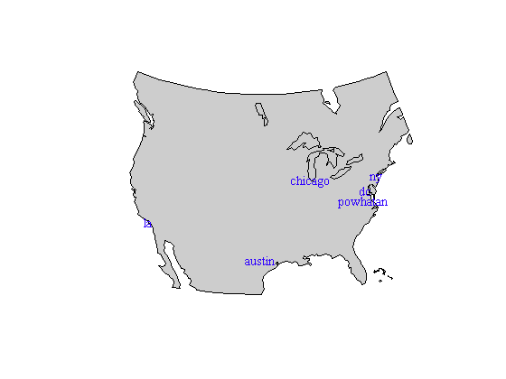
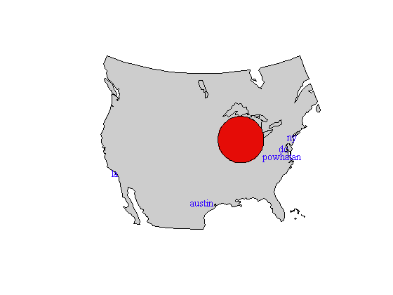
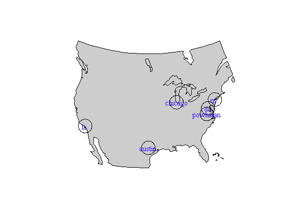
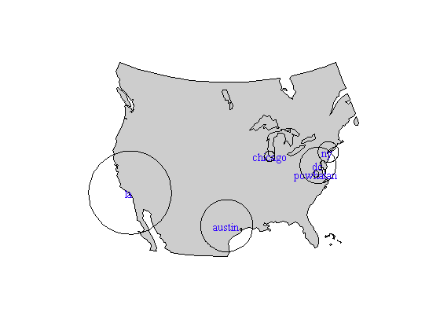
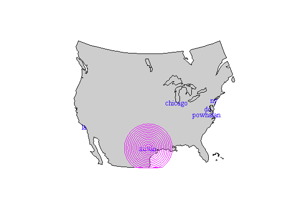
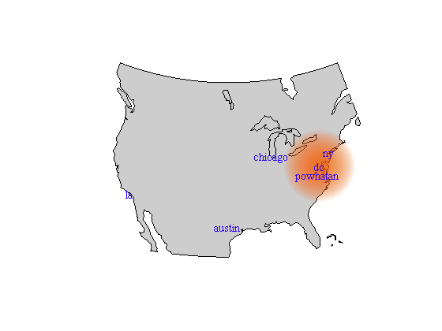

circlem documentation
The circlem draws circles on maps.
Contents
Syntax
circlem(lat,lon,radius) circlem(...,'units',LengthUnit) circlem(...,'PatchProperty',PatchValue) h = circlem(...) [h,circlelat,circlelon] = circlem(...)
Description
circlem(lat,lon,radius) draws a circle or circles of radius or radii given by radius centered at lat, lon, where radius, lat, and lon may be any combination of scalars, vectors, or MxN array. All non- scalar inputs must have matching dimensions.
circlem(...,'units',LengthUnit) specifies a length unit of input radius. See validateLengthUnit for valid units. Default unit is kilometers.
circlem(...,'PatchProperty',PatchValue) specifies patch properties such as edgecolor, facecolor, facealpha, linewidth, etc.
h = circlem(...) returns the patch handle of plotted circle(s).
[h,circlelat,circlelon] = circlem(...) also returns arrays of latitudes and longitudes corresponding to the outline of each circle drawn. Each "circle" is in actuality a polygon made of 100 lat/lon pairs.
Examples
First let's initialize a map of the continental United States. We'll also label six of America's biggest and most influential cities:
worldmap([25 55],[-130 -65]) cla load coast patchm(lat,long,.8*[1 1 1]) places = {'chicago';'ny';'austin';'dc';'la';'powhatan'}; lats = [41.88 40.71 30.27 38.91 34.05 37.54]; lons = [-87.63 -74.00 -97.74 -77.04 -118.24 -77.92]; textm(lats,lons,places,'vert','middle',... 'horiz','center','color','b')
Draw a big red circle around Chicago. We'll give the circle a 500 kilometer radius:
h = circlem(lats(1),lons(1),500,'facecolor','red');
That's nice. Now let's delete that and draw circles of 200 km radius around all of our cities:
delete(h) h = circlem(lats,lons,200);
Alternatively, all the circles can be different sizes:
delete(h) h = circlem(lats,lons,[100 200 500 350 800 60]);
Or perhaps you want a bunch of concentric magenta circles around Austin:
delete(h) h = circlem(lats(3),lons(3),50:50:700,'edgecolor','m');
To get a fuzzy-edged semitransparent circle, stack several concentric circles and declare a face alpha value. Here I'm the rgb function to get RGB values of bright orange:
delete(h) h = circlem(lats(4),lons(4),50:20:700,'edgecolor','none','facecolor',rgb('bright orange'),'facealpha',.05);
Author Info
This function was written by Chad A. Greene of the University of Texas Institute for Geophysics (UTIG) on October 14, 2014.